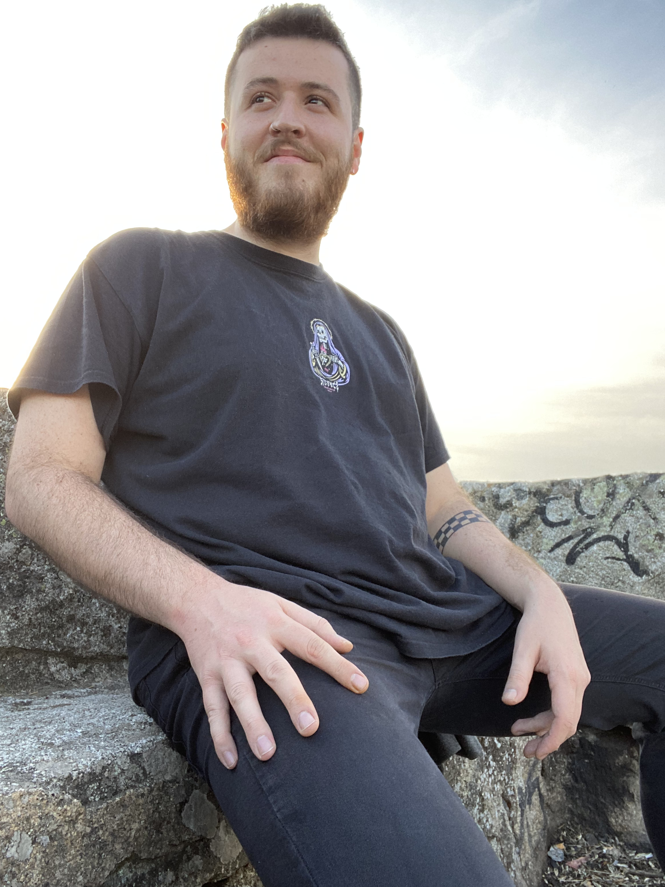

Jorge León Elías
technical & systems designer
Design ● Systems ● Implementation
+5 years of AAA & Indie experience
I work at the intersection of game design and implementation, designing gameplay systems and turning them into playable, testable experiences in Unreal Engine.
Technical Game Designer
CI Games - Lords of the Fallen II
Principal Game Designer
Herobeat Studios - Wilderings: The Lost Spring
Endling: Extinction Is Forever
BAFTA-winning game
Game Awards nominee
Selected work
Projects where
design meets implementation.
A selection of projects spanning systems design, technical design and hands-on implementation. Select a project to explore the case study.

JORGE / MADRIDAbout
A designer who
likes to build.
I enjoy the space between a design document and a playable game.
I'm a Technical & Systems Game Designer based in Madrid. My work sits between creative design and implementation: defining how systems should work, prototyping them quickly, and getting them into a playable state so they can be tested and iterated.
My primary tool is Unreal Engine, where I work across gameplay systems, Blueprint implementation, AI, combat, progression, cameras, prototyping and technical design.
Contact
Let's build something
worth playing.
For opportunities, collaborations, or just to talk game design.